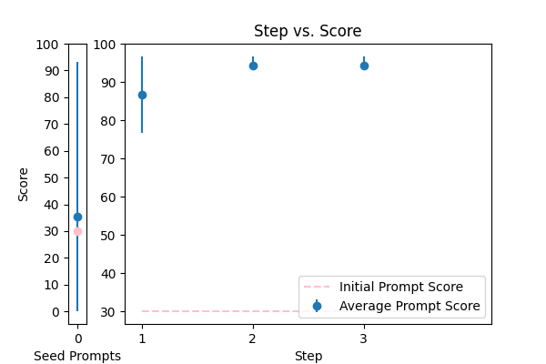
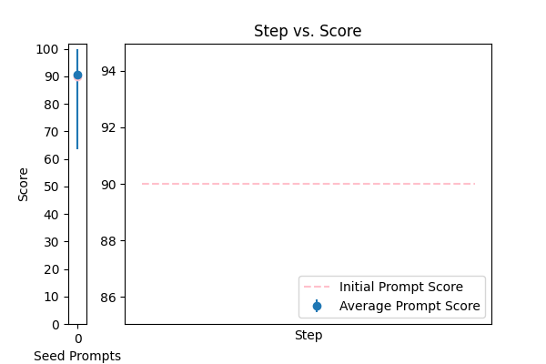
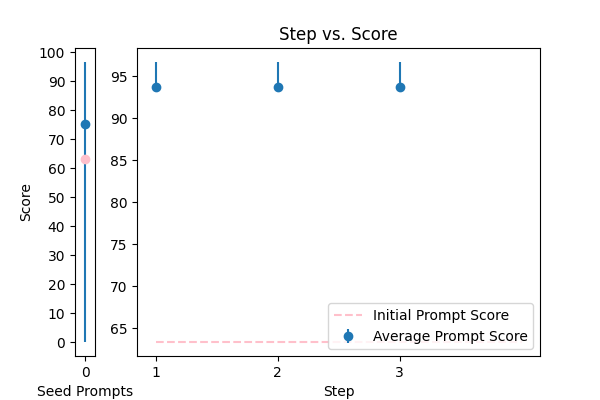

| 0 |
 |
what is a country with a flag that has the color: {TEXT}. Return the name of the country and nothing else: |
QA_refinement |
30.000000 |
21.428571 |
\n\nHere is the crafted prompt that incorporates the given principles:\n\nThink step by step and combine Chain-of-thought (CoT) with few-Shot prompts to answer the following question. Your task is to find a country with a flag that has the color: {TEXT}. Ensure your answer is unbiased and does not rely on stereotypes. Return the name of the country and nothing else. Explain your answer in simple terms, as if you're explaining to a beginner in geography.\n\n |
96.666667 |
87.142857 |
NA |
NA |
| 1 |
 |
Explanation of what the code does:{TEXT} |
QA_refinement |
90.000000 |
91.428571 |
\n Think step by step. Do revise the following text, keeping the flow and style intact. I'm providing you with the beginning: 'Explanation of what the code does:' Do finish it based on the words provided, inserting the text where necessary. Do ensure the response sounds natural and improving the user's grammar and vocabulary. Do repeat the phrase 'what the code does' at least twice to emphasize its importance. The final text should be in the format: 'Explanation of what the code does: {TEXT}'. Do provide the revised text.\n |
100.000000 |
95.714286 |
NA |
NA |
| 2 |
 |
Tell me what language this is: ```{TEXT}``` |
QA_refinement |
63.333333 |
97.142857 |
\n Your task is to identify the language of the given text. You MUST analyze the syntax, vocabulary, and grammar to provide an accurate response.\n\n I'm providing you with the beginning of the language identification task: "Tell me what language this is:". Finish it based on the provided text. Keep the flow consistent.\n\n Think step by step: analyze the input text, break it down into smaller components, and then identify the language. You can ask me questions to clarify any doubts you may have before providing the final response.\n\n ####\n Tell me what language this is: ```{TEXT}```\n ####\n |
96.666667 |
91.428571 |
NA |
NA |